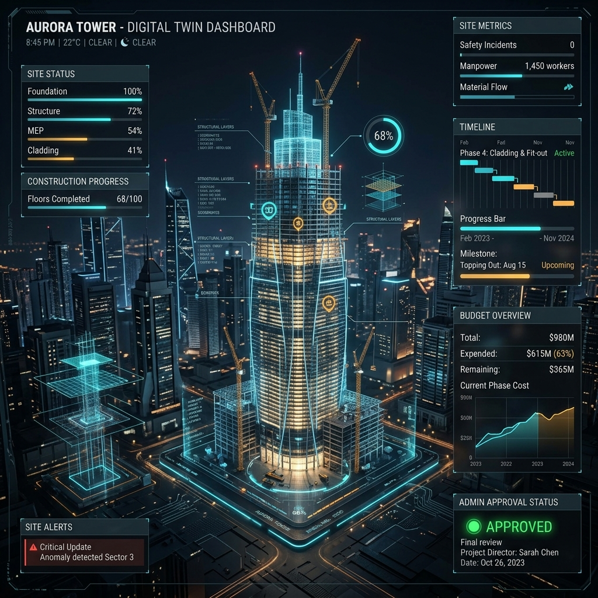
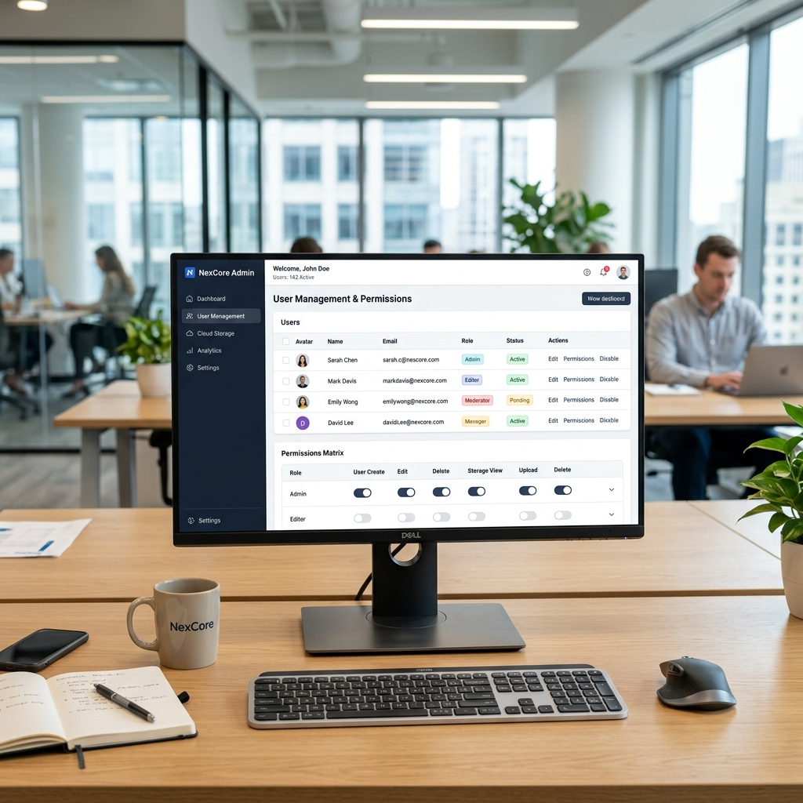
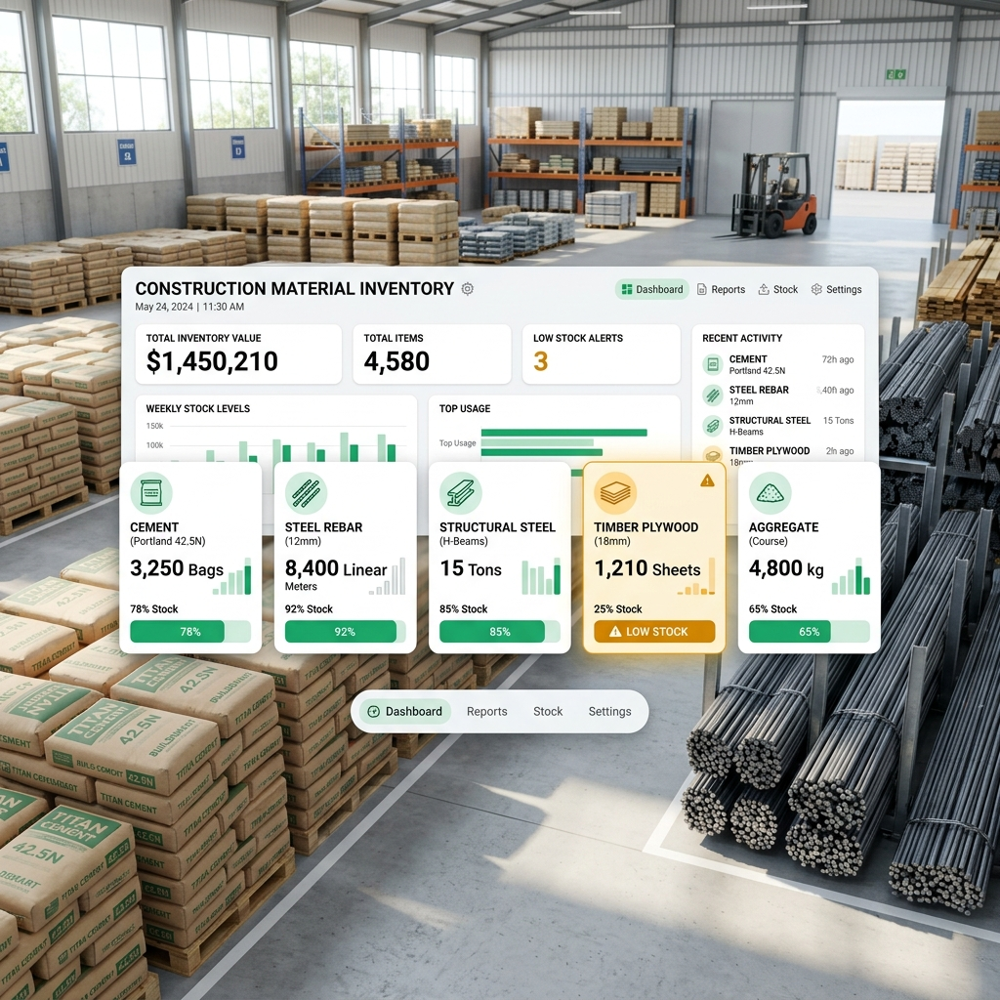
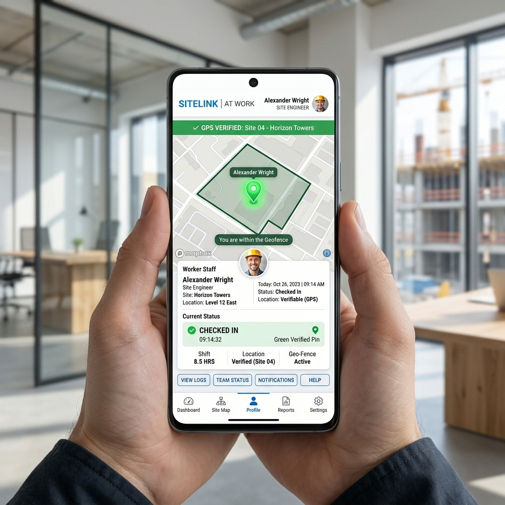

A unified enterprise platform providing complete operational visibility over multisite projects, material logistics, inventory low-stock alerts, geo-fenced attendance, and role-based cloud security.
Cloud Construction Operating System
Comprehensive 100-word operational overview and usage instructions for each core SythOS capability.
SythOS is an enterprise-grade Construction Management Operating System engineered specifically for civil construction companies, real-estate developers, and infrastructure firms. It replaces traditional paper logs, fragmented messaging groups, and manual spreadsheets with a single synchronized cloud ecosystem. Operating seamlessly across mobile apps and web admin terminals, SythOS connects site supervisors, project managers, vendors, and executive leadership. The system delivers end-to-end operational control over material procurement, site attendance, project timelines, and document storage, ensuring total transparency, zero inventory leakage, and maximum project profitability across all active construction sites.
Managing multiple construction projects across different geographic locations often leads to communication bottlenecks and cost overruns. SythOS Multisite Management resolves this by consolidating all project locations into a single centralized dashboard. Executive administrators can monitor progress, compare site expenditures, and allocate resources across dozens of active construction sites simultaneously. Each site operates with localized boundary settings, budget caps, and supervisor assignments while streaming live updates back to the primary command center. This enables management teams to identify delayed milestones and budget anomalies early without visiting every site physically.
Projects menu.+ Add Project → Enter project name, address, budget, and GPS location pins.
On-site execution depends on clear daily task allocation and timely milestone tracking. SythOS Task Management allows project managers to break down complex structural timelines into actionable daily site tasks. Managers assign specific tasks to site engineers and supervisors, complete with target deadlines, technical specifications, and required material quantities. As work progresses on site, supervisors upload progress photos and update completion percentages directly from their smartphones. Managers receive instant verification requests, allowing them to inspect completed stages digitally, approve milestone payments, and keep overall project timelines strictly on schedule.
Task Manager.New Task → Define task title, description, assigned engineer, and deadline.
Material procurement requires seamless coordination between site engineers, procurement heads, and external vendors. SythOS Material & Logistics automates the complete supply chain lifecycle starting from site Requisition Indents to verified Goods Received Notes (GRN). Site supervisors raise digital indents for cement, steel, or aggregate requirements. Project managers review and approve the indent into an official Purchase Order (PO) dispatched to suppliers. When materials arrive at the site, supervisors verify physical weight, snap photos of delivery challans, and issue a GRN, ensuring that payments are processed only for verified material deliveries.
Raise Indent for required materials.Issue GRN.Running out of critical materials like cement or steel rebar halts construction work and incurs heavy labor idling costs. The SythOS Inventory Engine maintains a real-time ledger of all site materials, automatically deducting quantities as work progresses and GRNs are issued. Administrators can establish minimum threshold levels for each material category. When stock levels drop below the defined safety limit, SythOS triggers prominent amber Low-Stock Warnings on the dashboard and sends immediate push alerts to procurement managers, enabling timely reordering before site operations experience costly interruptions or material shortages.
Inventory Hub → Set minimum stock thresholds for cement, steel, and timber.⚠️ Low Stock Alert activates.Reorder button automatically drafts a new material indent for approval.
Accurate attendance tracking is essential for payroll integrity across scattered job sites. SythOS combines mobile biometric check-ins with GPS Geofencing radius validation. When staff members or site workers attempt to punch in from the mobile app, the system calculates their precise location relative to the project site boundaries. Check-ins outside the designated perimeter are flagged as invalid. In addition, supervisors can manage daily wage labor lists, log work shifts, track cash advances, and auto-calculate weekly wage payouts, eliminating proxy attendance and manual timecard discrepancies completely.
Punch In.
Construction organizations require seamless multi-user collaboration across corporate offices, regional hubs, and field sites. SythOS is engineered for high-concurrency environments, supporting hundreds of simultaneous user sessions without latency or data conflicts. Whether a site engineer is uploading delivery receipts, a project manager is approving indents, or an executive is reviewing financial reports, changes are synchronized live across all active user sessions. Multi-tenant site isolation ensures that team members collaborate efficiently while seeing only the specific project data relevant to their operational domain.
User Directory → Invite new team members via phone number.Protecting sensitive corporate financials and restricting administrative actions requires robust permission management. SythOS enforces granular Role-Based Access Control (RBAC) across five distinct user tiers: Super Admin, Project Manager, Site Engineer, Supervisor, and Vendor. Super Admins possess full system control including user management, global budget approvals, and audit logs. Project Managers oversee assigned sites and purchase orders. Site Engineers and Supervisors have operational permissions restricted to material indents and attendance logging. Vendors access dedicated portals to view assigned purchase orders and submit delivery notes securely.
Role & Permissions Matrix.Construction projects generate thousands of physical documents including site blueprints, delivery challans, bills, tax invoices, and site photos. SythOS Cloud Storage provides an organized, tamper-proof cloud repository for all project documents. Files uploaded from mobile phones or web terminals are automatically categorized by project, date, and document type. Documents are encrypted at rest and in transit, ensuring audit readiness and eliminating document loss. Authorized users can view, search, and download blueprints or signed GRN bills instantly from any location worldwide.
Cloud Storage Vault within any project site folder.Upload File → Select blueprints, site photos, bills, or delivery receipts.The SythOS Admin Panel serves as the central command hub for executive leadership and system managers. Built with a clean, high-performance web interface, it provides complete oversight of overall company operations. From the Admin Panel, executives approve pending projects, register new corporate staff, review company-wide inventory balances, inspect system audit logs, and export comprehensive PDF and CSV reports. Real-time telemetry ensures that administrative approvals take effect immediately across all connected field devices, giving management complete operational mastery over the entire construction lifecycle.
Admin Console Login URL.9204732699) to access the Master Dashboard.CEO & Full Stack Developer — Vertex HaleX
"SythOS was designed and engineered by Srisank Choudhary at Vertex HaleX to solve the core operational challenges of civil construction, material leakage, and workforce tracking. By uniting modern cloud architecture with intuitive mobile and web applications, SythOS empowers construction companies to achieve total operational clarity and financial control."